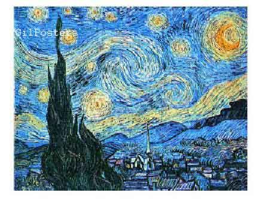
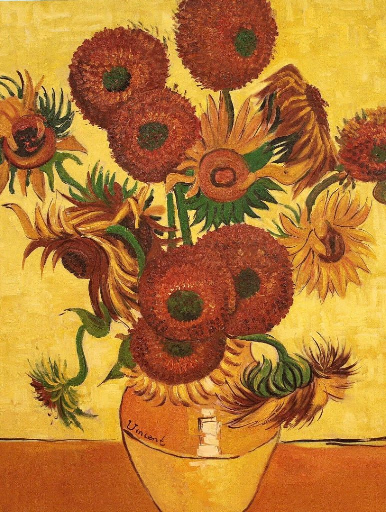
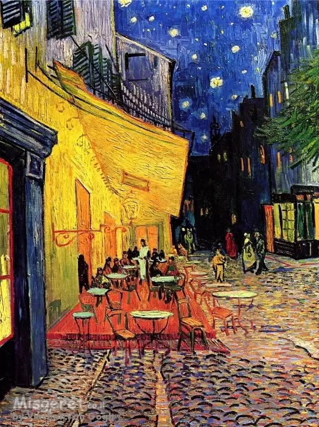
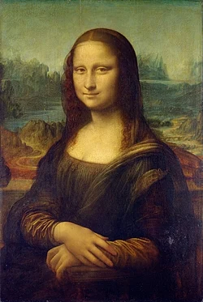
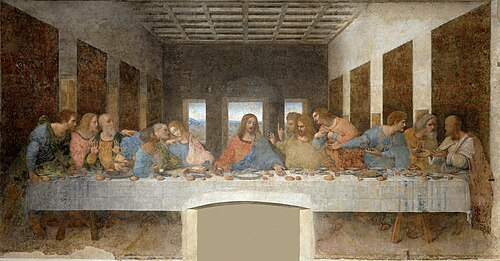
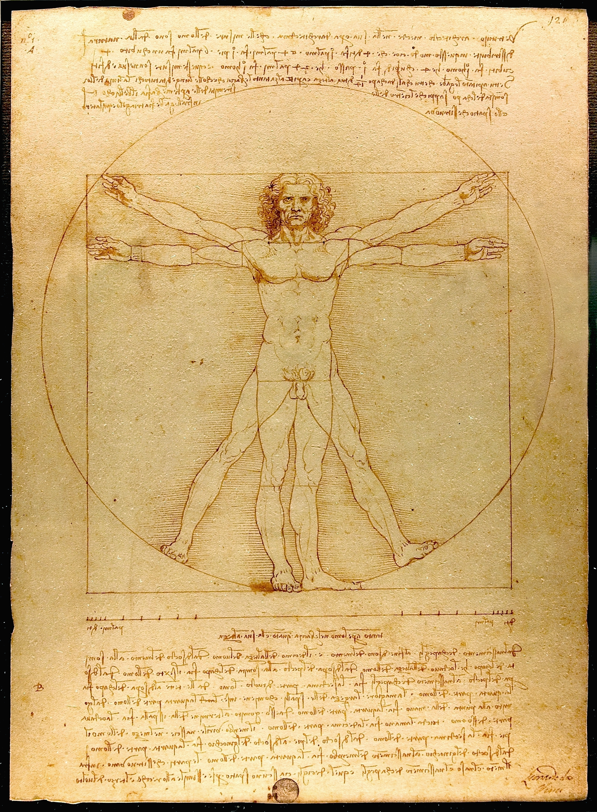
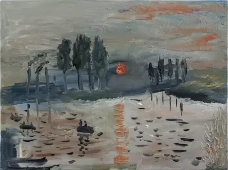
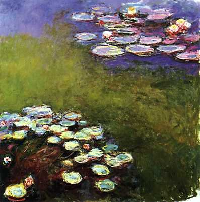
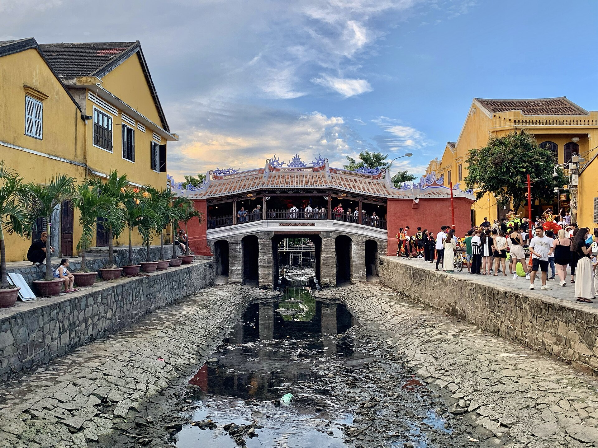

האוסף המרכזי
לחצו על התמונות הממוזערות כדי לצפות ביצירות בגודל מלא (בתחתית העמוד).
וינסנט ואן גוך
הקלטה: ניתוח יצירותיו של ואן גוך



לאונרדו דה וינצ'י
הקלטה: סודות המונה ליזה



קלוד מונה
הקלטה: השפעת האור על האימפרסיוניזם



תצוגה מוגדלת
אזור זה מדמה חלון קופץ. לחצו על כפתור הסגירה כדי לחזור למעלה.